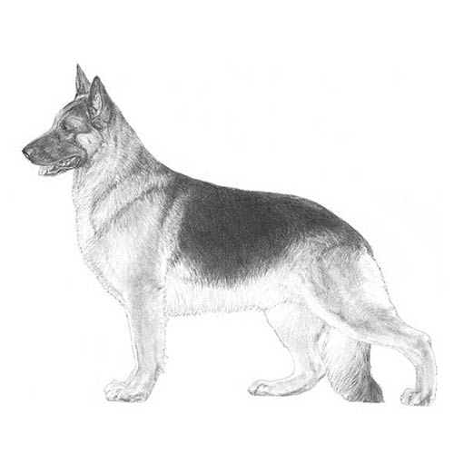

Dog Breeds
Image
Shih Tzu 
Image
Golden Retriever 
| Image | Shih Tzu | | The Shih Tzu is a very adorable dog, it is covered with so much hair on it's coat that they look like a lion. It is known to be friendly around children, they make great pets if you love hanging out. They are in the middle of having a high energy and the energy of a couch potato, and they'll find their own ways to keep themselves entertained. |
| Image | Golden Retriever | | The Golden Retriever is a very popular dog breed in America. They can aid in hunting and can be great guides for the blind and for search-and-rescue. They are very friendly and playful. |
| Image | German Shepherd |  | The German Shepherd is a smart dog with a muscular physicality. Their energy is so high you can practically play so many games with them. It needs a job or activity for mental stimulation. |
| Sources | Links | Greenberg, A. (2017, November 6). Golden retriever dog breed information. American Kennel Club. Retrieved November 15, 2022, from https://www.akc.org/dog-breeds/golden-retriever/, Kriss, R. (2017, November 6). Shih Tzu dog breed information. American Kennel Club. Retrieved November 15, 2022, from https://www.akc.org/dog-breeds/shih-tzu/, Greenberg, A. (2017, November 6). German shepherd dog dog breed information. American Kennel Club. Retrieved November 15, 2022, from https://www.akc.org/dog-breeds/german-shepherd-dog/ |